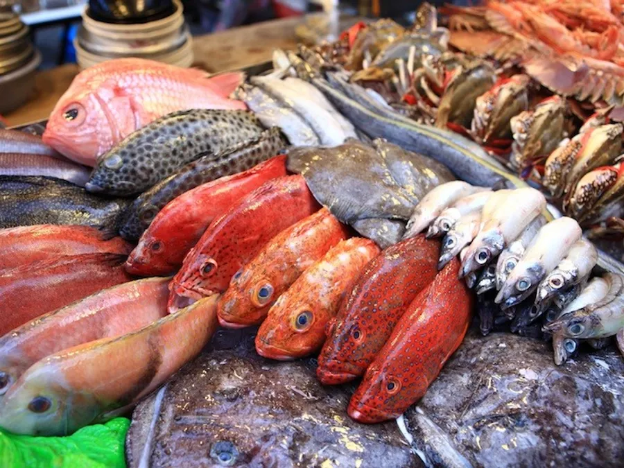
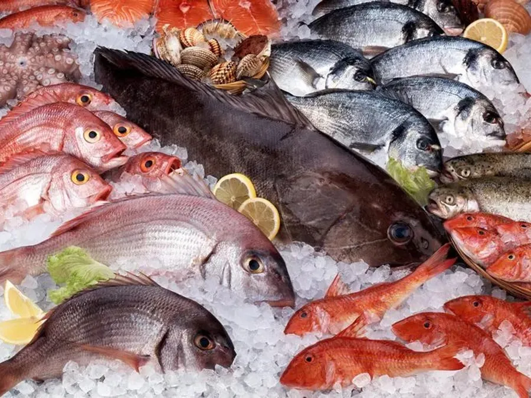
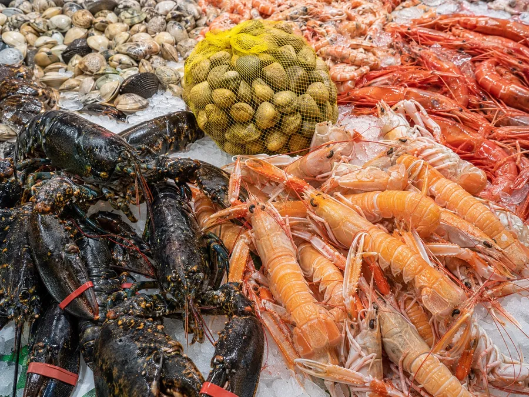
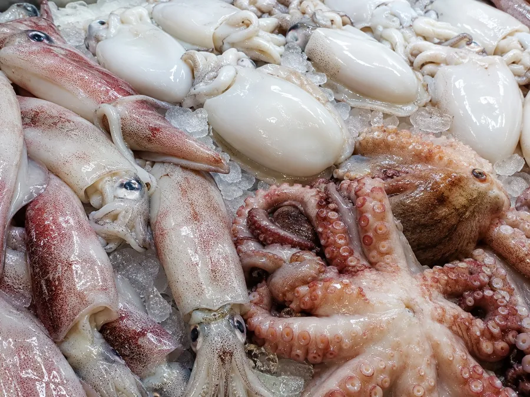
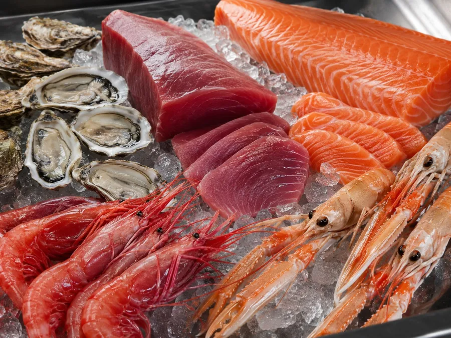
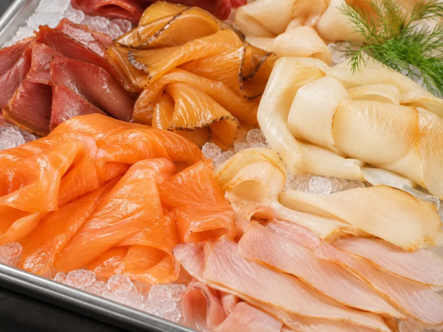
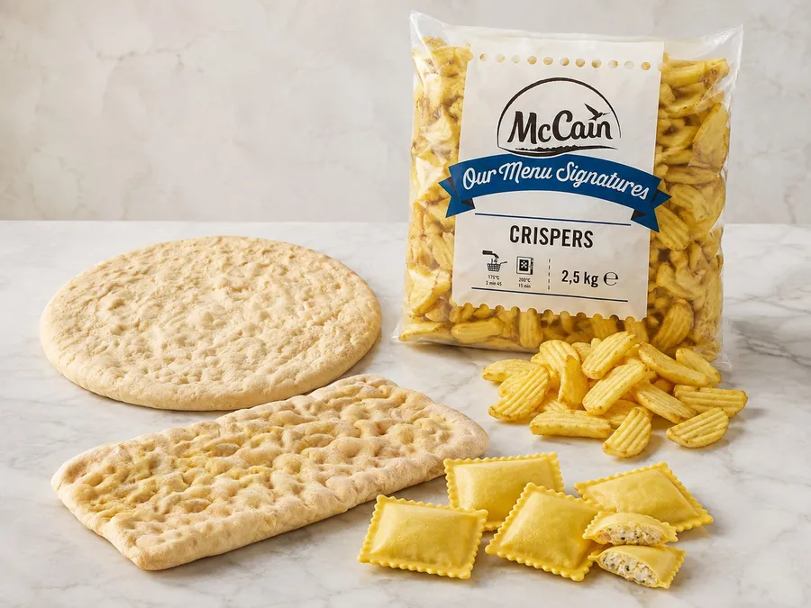
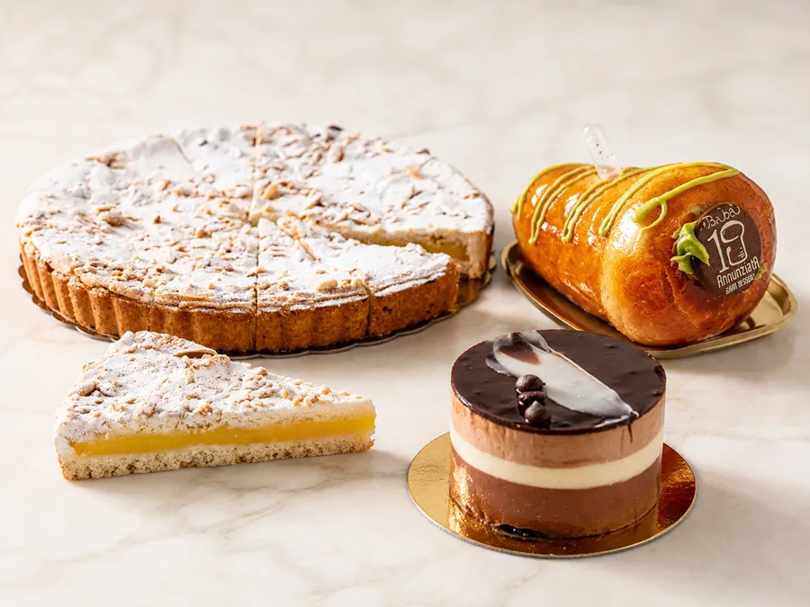

Ingrosso di pesce fresco e congelato per ristoranti in Toscana, Liguria ed Emilia-Romagna
Riforniamo oltre mille locali fra ristoranti, pescherie, hotel e sushi bar. Pesce del giorno, cella del congelato e dessert sullo stesso furgone e sulla stessa fattura: chi ordina da noi non tiene in piedi tre fornitori per riempire un menù.
Quello che vedete qui è una selezione dei prodotti più richiesti, non il magazzino. Le referenze in giacenza sono più di mille e cambiano ogni giorno, e su ordinazione prendiamo qualunque cosa: se cercate qualcosa che non c'è, è una domanda su WhatsApp, non un problema.

Pescato dell'Arcipelago Toscano
Cambia ogni notte · aggiornato dopo le 20

Pesce fresco
Spigola, Salmone fresco, Orata, Ombrina boccadoro

Crostacei e molluschi
Cozze, Vongole veraci e lupini, Vongole con guscio marroni congelate, Telline sgusciate

Calamaro, polpo e seppia
Calamaro intero pulito, Calamaro aperto a libro, Calamaro a strisce, Calamaro ad anelli

Prodotti per crudi di pesce
Tonno sashimi DelMar, Tonno filone pinne gialle, Salmone fresco, Pesce spada filone
Filetti congelati
Filetti di merluzzo, Cuore di merluzzo e baccalà, Brosme, Filetti di orata e branzino

Affumicati
Salmone affumicato, Ritagli di salmone affumicato, Pesce spada affumicato, Tonno affumicato

Patate, basi pizza e contorni
Patate fritte, Patate speciali e crocchette, Basi pizza, Pinsa

Dessert monoporzione
Soufflé al cioccolato, Tartufo, Babà al rum, Pasticciotto crema e amarena
Dicci che locale hai
Scrivici su WhatsApp
e ti mandiamo il listino giusto
Ristorante, pescheria, sushi bar o gastronomia: il listino è diverso per ognuno. Dicci qual è il tuo e ti mandiamo quello, non un catalogo generico.
Rispondiamo tutti i giorni, festivi compresi